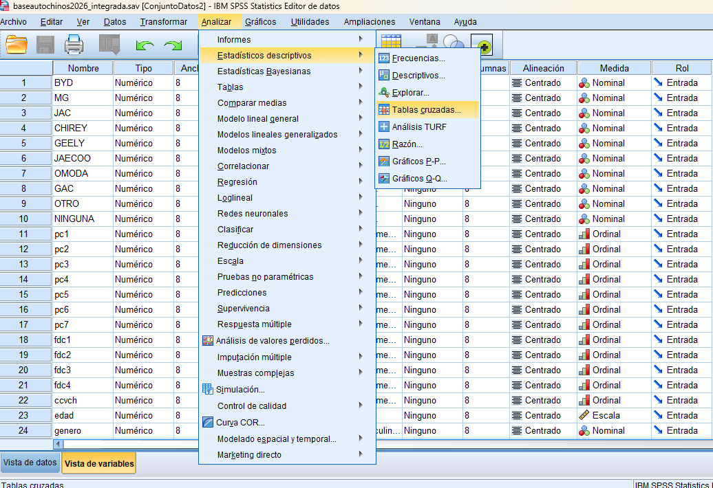
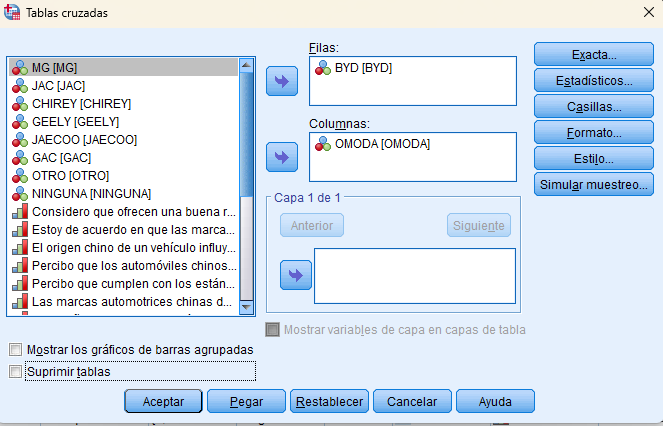
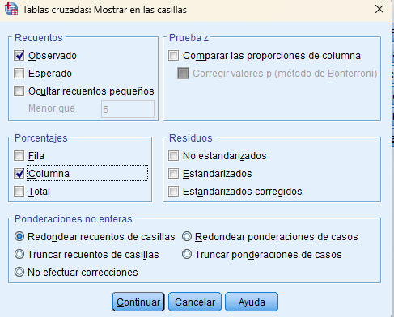
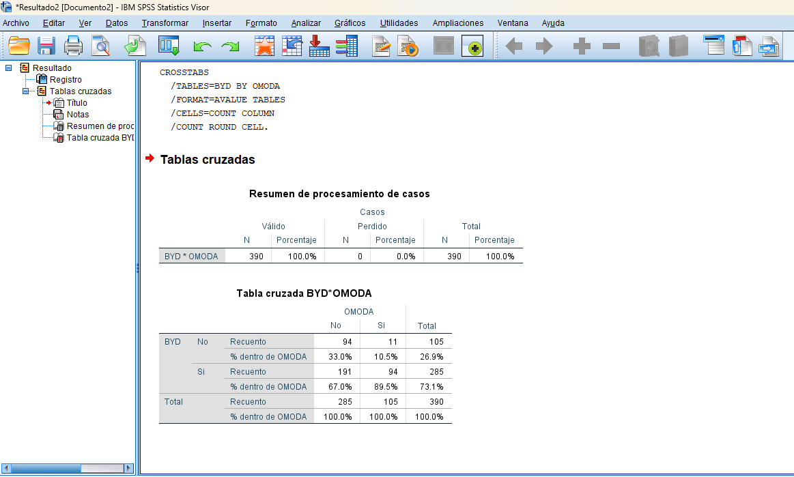

Las variables categóricas son aquellas que permiten clasificar a las personas o elementos en diferentes grupos, por ejemplo: sexo, rango de edad, estado civil o nivel educativo. Este tipo de variables son muy utilizadas en investigaciones de mercado porque ayudan a comparar grupos y encontrar diferencias entre ellos. Para analizar variables categóricas en SPSS se utilizan las Tablas de Contingencia, las cuales permiten observar cómo se distribuyen los datos entre dos variables y facilitan la interpretación mediante frecuencias y porcentajes.
28. Lo primero que se debe de hacer es ir al menú
29. Abrir la herramienta de Tablas de
1. Dar clic en Analizar.
2. Seleccionar Estadísticos descriptivos.
3. Dar clic en Tablas de contingencia. Nota: Esta opción permite comparar dos variables categóricas dentro de una misma tabla.

30. Elegir las variables a analizar
1. Seleccionar la variable BYD.
2. Colocarla en el apartado Filas.
3. Seleccionar la variable OMODA
4. Colocarla en el apartado Columnas. Nota: El orden de las variables puede cambiar según cómo se deseen visualizar los resultados, pero esto no afecta el análisis.
31. Mostrar porcentajes en la tabla
1. Dar clic en el botón Casillas.
2. En la sección Porcentajes, marcar la opción Columna.
3. Dar clic en Continuar. Nota: Los porcentajes facilitan la interpretación de los resultados porque permiten comparar los grupos de manera más clara.


32. Ejecutar el análisis
1. Dar clic en Aceptar.
2. SPSS abrirá una ventana con los resultados obtenidos. Nota: Primero aparecerá un resumen de los casos analizados y después la tabla de contingencia.
Las tablas cruzadas son una herramienta muy útil para analizar variables categóricas, ya que permiten comparar grupos y conocer cómo se distribuyen los datos. Gracias a este análisis es posible identificar patrones y diferencias entre categorías, lo que facilita la toma de decisiones y la interpretación de los resultados de una investigación.
